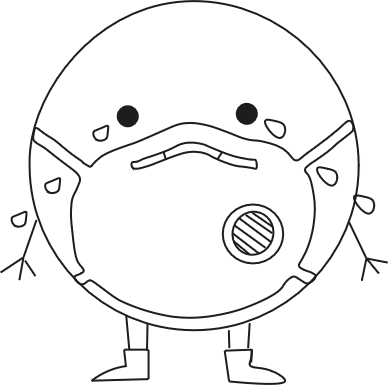

Over reWEAR
Reware is een website die zich toewijd naar de vintage winkels van de Kilo Store.
Tot op het heden word er helaas nog veel kleding onnodig weggegooid.
Daardoor beland vaak het kleding dat nog in prima staat is op erg vervuilende afval
gebergtes die enorm slecht zijn voor het milleu.
Door een stuk kleding een 2e leven te geven voorkom
je eigenlijk meerdere dingen namelijk:
Er hoeft minder kleding gemaakt te worden(vaak door arbeiders in arme
landen) waardoor er veel minder CO2 uitstoot word veroorzaakt met minder waterverbruik en je verlengt het
levensstuk van de kleding waardoor
er ook minder kleding op afvalgebergtes komen te liggen die dan later verbrand wordt in slechte stoffen.
reWEAR wilt jullie informeren over waarom het concept van de KiloStore eigenlijk zo belangrijk is en hopelijk
overtuigen om ook te overwegen om 2e handsklelding te kopen.

2e leven voor kleding
Het kopen van tweedehands kleding biedt verschillende voordelen, zowel op persoonlijk als op maatschappelijk en
milieugebied. Hier zijn enkele redenen waarom het goed is om tweedehands kleding te kopen:
1. Duurzaamheid:
Een van de belangrijkste redenen om tweedehands kleding te kopen, is de positieve impact op het milieu. De
mode-industrie is een van de meest vervuilende industrieën ter wereld, en door tweedehands kleding te kopen,
verminder je de vraag naar nieuwe productie. Dit draagt bij aan het verminderen van de milieu-impact van
textielproductie, inclusief het gebruik van water, energie en chemicaliën.
2. Verlengde levensduur van kledingstukken:
Door tweedehands kleding te kopen, geef je kledingstukken een tweede leven. Hierdoor wordt de levensduur van
kleding verlengd en wordt voorkomen dat deze op de vuilnisbelt terechtkomen. Het helpt ook om de hoeveelheid
textielafval te verminderen.
3. Betaalbaarheid:
Tweedehands kleding is vaak veel betaalbaarder dan nieuwe kleding. Dit stelt mensen in staat om stijlvolle en
kwalitatieve kleding te kopen zonder de hoge kosten van gloednieuwe items. Dit is vooral gunstig voor mensen met
een beperkt budget.
4. Unieke stijl:
Tweedehands winkels en markten bieden vaak unieke kledingstukken die niet langer beschikbaar zijn in reguliere
winkels. Het kopen van tweedehands kleding geeft je de mogelijkheid om een unieke stijl te creëren en je te
onderscheiden van de massa.
5. Reductie van kinderarbeid en slechte arbeidsomstandigheden:
Door tweedehands kleding te kopen, verminder je indirect de vraag naar goedkope arbeid in de textielindustrie.
Dit draagt bij aan de vermindering van de uitbuiting van arbeiders en bevordert eerlijke arbeidspraktijken.
6. Minimalisering van modeverspilling:
De mode-industrie is berucht om snelle trends en seizoensgebonden collecties, wat leidt tot overmatige
consumptie en verspilling. Door tweedehands kleding te kopen, draag je bij aan het verminderen van de vraag naar
nieuwe kleding en het bevorderen van een meer circulaire mode-economie.
Over het algemeen biedt het kopen van tweedehands kleding een win-win situatie, waarbij consumenten kunnen
genieten van mode tegen lagere kosten, terwijl ze tegelijkertijd een positieve impact hebben op het milieu en
sociale kwesties.